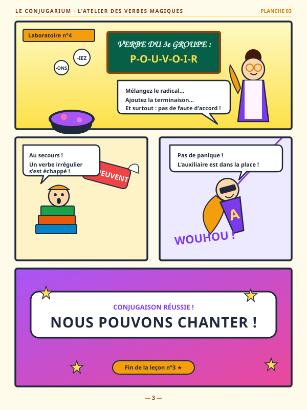

Planche 01
Planche 01
Épisode 1 · Histoire
L'Étymologie Voyageuse
Du latin au français contemporain
Le système est clair par défaut : le fond principal est le blanc violacé #FAF8FC, et c'est lui qui domine. Le violet foncé est une couleur de contenu — --primary, pour les titres, le texte et les boutons pleins — et, dans sa déclinaison profonde, le fond d'une seule bande de rupture par page. L'orange vif marque ce qui est cliquable ou en cours de lecture ; il ne sert jamais de fond à du texte long.
Deux familles de titres selon le registre : --font-heading pour les pages publiques destinées aux enfants, --font-display pour les pages pro / à accès protégé. Chez Clap ! Studio, Gaegu et Avenir Heavy ; ici, Avenir Heavy tient les deux rôles — le site de référence est sobre et littéraire, pas conté. Lexend reste le corps de texte dans tous les thèmes — choisie pour sa lisibilité chez les lecteurs débutants, elle n'est jamais remplacée.
— · --fs-title-fun · .cl-title-fun
— · --fs-title-pro · .cl-title-pro
—, interligne --lh-loose (1.8). Corps de texte long sur fond clair, centré, largeur limitée à --prose-max pour garder une longueur de ligne confortable.
Aucune police n'est chargée en plus du système de base : le thème réutilise assets/fonts/avenir-heavy.woff2.
Échelle en rem, multiples de 0.25rem. Les rayons suivent la taille de l'objet : plus la surface est grande, plus le rayon est doux. Tout ce qui est interactif et compact est en pill.
Un seul bouton plein par zone visible. L'orange vif est réservé à l'action principale ; tout le reste est en ghost. Le hover est toujours un léger scale + éclaircissement, jamais un changement de teinte.
Le badge accent qualifie le contenu (type d'œuvre). Le badge ghost qualifie une ressource secondaire. Le badge success confirme un état. Les pills de filtre basculent en accent plein quand actives.
Les cartes remontent d'un cran par rapport à la surface qui les porte — blanches sur le blanc violacé, violet profond sur la bande sombre. La bordure accent (--accent) est réservée à une seule carte par page : l'action qu'on veut voir en premier.
Glossaire illustré par épisode, format A4.
Un podcast qui explore l'origine, le sens et la vie des mots de la langue française.
Les champs sont en creux par rapport à la carte qui les contient (--surface-sunken). Le focus se signale par la bordure accent + un halo de 3px — jamais par l'outline du navigateur.
Saisissez le code fourni dans votre kit pour accéder aux ressources.
Le composant central du studio. Les lignes sont collées (pas d'espace, un filet de séparation) et le bloc entier est masqué en --r-lg. La ligne en lecture vire à l'orange sur trois signaux à la fois : numéro, titre, fond.
Seule zone d'accent pleine du produit, posée en position:fixed au-dessus du contenu. Sur mobile il perd sa forme pill (rayon --r-2xl) et ses contrôles secondaires. Prévoir .cl-player-spacer en fin de page pour que le dernier élément ne passe pas dessous.
Le pendant vidéo de la playlist audio. Trois briques : .cl-vgallery pour choisir une vidéo, .cl-video pour le lecteur 16:9, .cl-vswitcher pour changer d'épisode sans quitter la page. Comme la playlist audio, aucune couleur n'est écrite en dur : le thème seul décide.
La vignette est en aspect-ratio:16/9, donc jamais déformée. Au survol, quatre signaux partent ensemble : la carte se soulève, la vignette grandit d'un cheveu, le voile noir s'éclaircit et le bouton play s'inverse. Sous 600px la carte passe en colonne et le CTA se range à droite.
.cl-video__frame tient le ratio 16:9 ; l'iframe ou la video qu'on y glisse se colle aux quatre bords toute seule. Le fond est --surface-invert pour que le noir de la vidéo ne fasse pas de saut au chargement.
La grille se remplit toute seule (auto-fill, colonnes de 200px minimum) : une colonne sur mobile, quatre sur grand écran, sans media query. L'épisode en cours porte .cl-vchip--active : bordure accent et pastille pleine.
Présentation de planches illustrées, planches de BD documentaire et illustrations de mots. Deux modes d'affichage au choix : en vignettes (.cl-board-gallery) ou en liste (.cl-board-list). Un clic sur une vignette, un titre ou une ligne ouvre instantanément le visuel en grand format et en surimpression dans la visionneuse (.cl-lightbox), avec navigation au clavier (← / → / Échap).
Le ratio 3:4 portrait respecte le format d'une planche de BD standard. Au survol, la carte se soulève, un voile doux apparaît avec une icône loupe, et l'image s'anime d'un léger zoom. Clic pour agrandir.
Planche 01
Du latin au français contemporain

Planche 03Curiosités et trésors lexicaux
 Illustration
Illustration
Affiche & couverture de saison
Sommaire des planches documentaires et notes d'écoute du podcast. Chaque ligne est cliquable et ouvre la surimpression.
L'enregistrement de l'épisode inaugural et ses repères historiques
Recueil illustré d'expressions pittoresques et d'anciens proverbes
Poster pleine page d'ouverture de l'Observatoire des Mots
La signature visuelle : jamais de bord droit entre deux sections de couleurs différentes. La forme vient du thème (--divider-shape) — coulures de peinture chez Clap ! Studio, nuages au Conjugarium, flammes chez Surhumains. Ici le thème réutilise les coulures, la forme par défaut du studio. Elle est appliquée en mask-image, donc les couleurs se posent par instance, en CSS pur.
La densité du motif est réglable par thème, via --divider-repeat : c'est la largeur d'un motif, en pixels fixes (et --divider-repeat-mobile sous 600 px), pour que l'espacement entre les vagues ne dépende pas de la largeur d'écran. Toutes les formes partagent la même convention : un SVG de 1920 unités de large, calé sur son bord bas.
Le système couvre deux registres. La page publique alterne surface claire, surface sombre et accent, séparés par des .cl-wave, titres en --font-heading. La page protégée reste en surface sombre pleine du haut en bas, sans entête ni pied de page, titres en --font-display — c'est le registre « ressources pro ». Dans ce thème les deux registres partagent la même police : la distinction se fait par la mise en page seule.
Aventures audio & podcasts
pour les enfants
L'Observatoire des Mots explore l'origine et la vie des mots de la langue française.
Le violet profond n'est pas un fond de page, c'est une rupture : une bande sombre par page, pour le moment fort — le lecteur intégral, une mise en avant. Poser .cl-invert (ou .cl-section-invert) redéclare la rampe de texte, les bordures et les voiles pour tout le sous-arbre. Les composants à l'intérieur sont exactement les mêmes : aucune variante sombre à maintenir.
Même .cl-playlist, mêmes .cl-row, mêmes boutons que sur fond clair.
Une seule par page. Deux bandes sombres et la rupture ne rompt plus rien : le fond clair redevient l'exception, ce que ce système refuse.
Pages complètes, prêtes à dupliquer : chacune assemble les composants ci-dessus et les anime avec components.js, à partir d'un bloc de données JSON. Chaque layout s'ouvre dans le thème de son projet d'origine ; ?theme=… le rejoue dans un autre. Pour un nouveau support, partir du layout le plus proche.
Les tokens sont en deux couches. Les primitives (--clap-*, --cjg-*, --shm-*, --obs-*) portent les couleurs brutes et ne sont jamais lues par un composant. La couche sémantique (--surface, --accent, --accent-ink…) est la seule que lisent les composants — et donc la seule qu'un thème redéfinit. Le sélecteur en haut de page rejoue toute la documentation dans un autre thème : aucune classe ni aucun composant ne change.
| Token | Clap ! Studio | Conjugarium | Surhumains | Observatoire |
|---|---|---|---|---|
--primary | #0D1B2E navy | #0E172A nuit | #3333CB bleu électrique | #33236B violet |
--surface | #FFFFFF | #EFEEFA lavande | #F9F9F9 | #FAF8FC |
--surface-alt | #F2F4F7 | #C9C8FB pervenche | #9EEFDF menthe | #F4B0CF rose |
--surface-invert | #0D1B2E | #0E172A | #2626A8 | #271A54 |
--accent | #FFD100 jaune | #F4B0CF rose | #F98FA5 corail | #EA571B orange |
--accent-ink | #7A6000 | #A62A60 | #B0234A | #B53F0E |
--on-accent | #1A1A1A | #0E172A | #14144B | #FFFFFF |
--font-heading | Gaegu | Simply Olive | Avenir Heavy | Avenir Heavy |
--divider-shape | coulures | nuages | flammes | coulures |
Chaque thème a une seconde bande claire, --surface-alt, posée par .cl-section-light--alt : citation, encart, temps de respiration entre deux sections claires.
« Une citation mise en avant. »